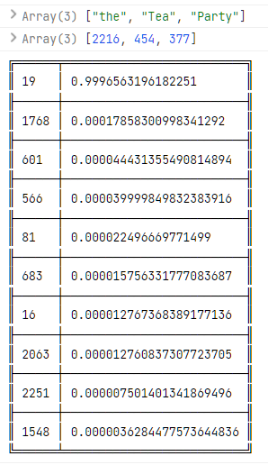
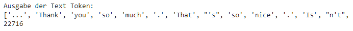

Struktur des gewählten Netzes:
Auf der linken Seite können Sie eines der möglichen Modelle auswählen. Auf der rechten Seite können sie einen beliebigen Text eingeben. Während der Eingabe werden in der Zeile darüber Vorschläge zur nächsten Eingabe in prozentual absteigender Reihenfolge der Wahrscheinlichkeit gemacht.
Hierfür wird nach jedem abgeschlossenen Wort eine neu Vorhersage auf Basis der letzten drei Worte gemacht. Bei der Eingabe des folgenden, nächsten Wortes wird in dieser Vorhersage nach Wörter mit den gleichen Anfang wie das neue, nicht abgeschlossene Wort gesucht. Diese werden nach Wahrscheinlichkeit geordnet, ausgegeben. Ein Wort ist erst abgeschlossen, wenn es durch ein Leerzeichen oder Zeilenumbruch unterbrochen wird.
Weiter wird auf der linken Seite unten der Text, welcher dem Training zugrunde lag, ausgegeben. Er kann genutzt werden, um die gemachten Vorhersagen zu evaluieren.
Rechts unten werden die aktuell zur Vorhersage genutzten Wörter angezeigt. In der Spalte darunter das aktuelle, aber nicht abgeschlossene Wort. Dies wird zur Filterung der vorhergehenden Vorhersage der Empfehlungen genutzt.
Die vorliegenden Modelle wurden auf Basis des unten zu sehenden Textes generiert. Es handelt sich um Reden von Donald Trump, welche vor dem Training aufbereitet wurden.
Wer sich ebenfalls für die Reden interessiert, findet den Text auf GitHub . Der Text kann auch direkt hier herunter geladen werden.
- keine Vorhersagen
Nach jedem beendeten Wort erfolgt eine neue Suche. Ein Wort ist abgeschlossen, wenn der Nutzer ein Leerzeichen eingibt. Die Suche basiert auf den letzten drei Wörtern, welche hier zu sehen sind:
Solange das aktuelle Wort nicht abgeschlossen ist, erfolgt keine neue Vorhersage. In diesen Fällen wird die letzte Vorhersage gefiltert und jeweils passende Vorhersagen angezeigt. Das aktuell verwendete Filterwort ist hier zu sehen:
Verwendete Frameworks
-
Bootstrap 5
Bootstrap ist ein auf HTML und CSS basierendes Frontend CSS Framework für Webseiten. Dem entsprechend fokussiert es auf das Design und Layout einer Seite sowie ihrer Oberflächenelemente und wird hierfür innerhalb dieser Anwendung verwendet.
-
D3 - Data Driven Documents
Bei D3 handelt es sich um eine JavaScript Bibliothek, welche zur Manipulation von HTML Dokumenten verwendet werden kann. D3 fokussiert hierbei auf die datengetriebene Darstellung von Daten und deren (interaktiven) Visualisierung. In dieser Anwendung wird es jedoch primär für den einfachen Zugriff auf DOM Dokumente eingesetzt.
-
Danfo.js
Danfo.js ist ein Open Source Framework, welches sich sehr stark an das bekannte Python Framework Pandas anlehnt. Hierbei versucht es, möglichst gleichartige Interfaces bereitzustellen, um Pandas Benutzern einen einfachen Einstieg zu bieten. Einsatzgebiet ist wie bei Pandas die Vor- und Nachverarbeitung von Daten aller Art unter Javascript. Im Rahmen diese Anwendung wird die mächtige Implementierung einer Pandas Series für schnelle Sortierungen, Filterungen und Zugriffe auf die Ausgabe der Prediction verwendet.
-
Google Colab
Google bietet - neben anderen Anbietern auch - die Möglichkeit, kostenlos mit einem online verfügbaren, leistungsstarken Jupyter Notebook zu arbeiten. Eine Verbindung zu Google Drive zur Sicherung seiner Arbeit ist hierbei ebenso möglich wie eigene Installationen z.B. via pip. Ebenso kann einfach eine Kopie auf GitHub hinterlegt und ausgeführt werden. In dieser Arbeit wurde die Umgebung für die Vorverarbeitung der Daten sowie das Erstellen des Models und dem anschließenden Training genutzt.
-
Keras
Bei Keras handelt es sich um ein ursprünglich separates Python Framework, welches bei recht hoher Abstraktion die Arbeit mit Tensorflow unterstützt. Als Tensorflows "Haussprache" ist sie mittlerweile Teil des Tensorflow Frameworks. In dieser Lösung wird sie u.a. für den Zugriff auf Tensorflow und der Modellerstellung verwendet. Daneben bietet sie nützliche Tool wie beispielsweise get_file zum einlesen von entfernten Dateien oder dem Laden vorgehaltener Standard DataSets oder vortrainierter Netze.
-
Natural Language Toolkit (NLTK)
Ein bekanntes und weit verbreitetes Toolkit rund um die Arbeit mit natürlicher Sprache. Insbesondere lohnt sich ein Blick bei der Arbeit im Umfeld von Sentiment Analysis für die Datenvorverarbeitung. Bei dieser Aufgabe wird der word_tokenizer aus dem Paket nltk.tokenize verwendet, um den Quelltext unter Beachtung der Sprache in Token zu zerlegen.
Im Verlauf der Arbeit bin ich zudem auf auf einen Blog gestoßen, welcher vier NLP Frameworks für die Verwendung mit JavaScript vorstellt. Auch wenn ich sie nicht gebrauche, klingen sie interessant, so dass ich darauf verweisen möchte: 4Best NLP Libraries for Node.js and JavaScript
-
scikit-learn
Ein im Umfeld um Python etabliertes Ökosystem für Ressourcen und Tools im Umfeld von maschinelles Lernen und KI. Es basiert selbst wiederum auf grundlegenden Tools wie NumPy, SciPy und matplotlib. Im Rahmen dieser Lösung wird lediglich die Methode CountVectorizer genutzt, um einfach Text in geordnete Token zu zerlegen.
-
Tensorflow for Python
Googles TensorFlow Framework bietet umfangreiche Funktionalität für die Erstellung von Anwendungen im Bereich der KI und eignet sich auch gut für die prototypische Entwicklung. Eine ausführliche API für Python findet sich hier. Daneben werden C++, Java und andere Sprachen unterstützt. In dieser Lösung wurde es für die Entwicklung innerhalb des Jupyter Notebooks mit Python verwendet sowie weiter gehend für den Export in ein von Tensorflow.js nutzbaren JSON Format.
-
Tensorflow for JavaScript
Eine für die Ausgabe und Verarbeitung in Browsern optimierte implementierung von Googles TensorFlow Framework für die Sprache JavaScript. Eine ausführliche API findet sich hier.
-
Tensorflow for JavasScript Visor & Surfaces
Eine von den Entwicklern von TensorFlow.js auf GitHub gepflegte Bibliothek für die einfache Visualisierung und Ausgabe von Daten. Eine ausführliche API findet sich hier. Innerhalb dieser Aufgabe wird es beispielsweise für die Ausgabe der Netzstruktur auf JavaScript Seite verwendet.
-
UNDERSCORE.JS
Eine nette, kleine JavaScript Bibliothek um Dinge, wie eine nur einmalige Aufrufbarkeit einer Funktion ( siehe _.once ) einfach zu implementieren. Sie wurde bei den ersten Codierungen verwendet, wird aber in der hier vorliegenden Lösung nicht mehr eingesetzt.
-
Plotly
Plotly ist eine verbreitete Grafikbibliothek mit Schnittstellen zu verschiedenen Sprachen wie Python, R oder JavaScript. In dieser Lösung wird Plotly als leichtgewichtige, aber schnelle Lösung zum Erstellen von Scatter Plots verwendet.
Umsetzung
Die Umsetzung wurde auf Grund der rechenintensiven Arbeit und besseren Möglichkeiten aufgeteilt. Die Vorverarbeitung der zugrundeliegenden Textdaten, die Modellentwicklung und das Training erfolgte in einem Jupyter Notebook unter Verwendung von TensorFlow mit Python. Das so trainierte neuronale Netz wurde im Anschluss in ein für TensorFlow.js verarbeitbares JSON Format umgesetzt.
Für die webseitige Anwendung wurde primär auf Tensorflow.js und JavaScript zurück gegriffen um die Logik zur Eingabe und Vorhersage in einer Browseranwendung umzusetzen.
Insbesondere bei der Datenvorverarbeitung kamen in starkem Maße weitere Bibliotheken und Tools zum Einsatz. Dies bedeutet jedoch nicht, dass deren Einsatz alternativlos ist. Viele der Arbeiten können auch direkt und einfach ohne Hilfe umgesetzt werden. Insofern stellen sie eine Vereinfachung dar, bieten darüber hinaus aber durch ihre hohe Optimierung gerade bei großen Datenkontingenten einen nicht zu unterschätzenden Performance und Qualitätsgewinn dar.
Lösung
Für die Lösung existiert keine eindeutig richtige oder falsche Lösung. Auch die hier vorgestellte Lösung hat somit Vor- aber auch Nachteile und kann sicherlich weiter optimiert werden. Hier musste ein Kompromiss zwischen Ergebnis und Zeitaufwand gemacht werden.
Es soll das nächste Wort auf Basis der bisherigen Wörter vorhergesagt werden. Das prinzipielle Vorgehen in diesem Fall ist hierbei grundsätzlich dahingehend, das einem neuronalen Netze das Wort (Label) vorgegeben wird, das als Folge einer zeitlich aufeinanderfolgenden Eingabe von Wörtern (Features) erwartet wird. Für diese Aufgabe eignen sich einfache recurrente Netze oder aber deren Variation als Long Short-Term Memory (LSTM) Netz. Beide erfassen die genannte zeitliche Dimension.
LSTM Netze habe hierbei den Vorteil, das auch sehr kleine Gewichte erhalten bleiben. Der bei einfachen recurrenten Netzen in Verbindung mit sehr kleinen Gewichten auftretende Effekt des weight decay tritt hier auf Grund des inneren Aufbaus unter Verwendung von Speichern nicht auf. Die hier vorliegende Lösung nutzt daher zum Erfassen der zeitlichen Abfolgen ein Netz auf Basis von LSTM.
Für das Training wurden reale Reden von Donald Trump verwendet, welche im Netz auf GitHub als Textversion frei verfügbar sind. Die Reden wurden als utf-8 eingelesen, um Umlaute nicht zu verlieren. Leere Zeilen und Zeilen, welche das Wort "SPEECH" enthalten und als Trenner zwischen den Reden stehen, wurden entfernt. Zeilenumbrüche blieben erhalten. Für das Training wurden die ersten 100.000 Zeichen des Textes verwendet. Dies beinhaltet auch Leerzeichen. Eine größere Anzahl ließ sich auf Grund mangelnder RAM Größe nicht ohne weiteres kostenlos verarbeiten. Netto beinhalten die 100.000 Zeichen 22.716 Wörter.
Im zweiten Schritt wurden die vorkommenden eindeutigen Token extrahiert (get_top_tokens()). Hierzu wurde die CountVectorizer Funktion aus dem skilearn Toolset verwendet. Er wurde so konfiguriert, dass alle vorkommenden Top Features berücksichtigt wurden. Das Ergebnis ist eine Liste von 2.484 eindeutigen Token. Hierbei wurde Case Sensitive vorgegangen, um etwaige hier verborgene Semantik nicht zu verlieren. Aus dem gleichen Grund wurde der Punkt als Zeichen berücksichtigt. Die so erhaltenen Token bilden die Basis für zwei Dictionaries, welche jedem Wort eine Ganzzahl zuordnen und umgekehrt (set_dictionaries()).
Auf dieser Basis wurde der gesamte Text in eine Codesequenz umgewandelt, welche zum Trainieren geeignet ist (create_coded_token()). Die folgende Abbildung zeigt eine Testausgabe zur Demonstartion:

Eine wichtige zu treffende Entscheidung ist hierbei, auf wie vielen Worte man eine Vorhersage trainiert. Nimmt man nur ein Wort, so verliert man die Semantik, die in einer Folge von Wörter zu finden ist. Werden zu viele Wörter genommen, so berücksichtigt man unter Umständen Wörter, welche keinen Bezug zur eigentlichen Aussage haben und das Ergebnis ebenso verfälschen könnten.
Die vorliegende Lösung basiert auf drei zeitlich aufeinander folgenden Wörtern, welche das nächste Wort zugeordnet wird. Auf Basis dieser Festlegung wird ein Feature Dataset mit jeweils drei Wörter und ein Label Dataset jeweils mit einem Wort erzeugt (create_trainings_data(), split_training_data()). Diese Festlegung wirkt sich auf das zu modellierende Netzwerk aus. Die folgende Abbildung zeigt eine Testausgabe der DataSets, welche das Sliden über den Daten nachvollziehbar macht:

Bei der Erstellung wird als erster Layer ein [Embedding Layer](Embedding layer) von Keras gewählt. Ihm werden die zuvor erstellten unterschiedlichen Token, in diesem Fall 2.484, übergeben. Diese werden auf 150 Neuronen am Ausgang (output_dim) abgebildet. Der dritte Parameter wird mit SLICE_LENGTH, hier 3 belegt. Dies entspricht der breite des Fensters, welches über die Daten geführt wird. Das Ergebnis ist ein Embedding und zugleich eine Eingangsschicht, die Keras im Hintergrund hinzufügt. Die Nutzung eines Embedding Layers hat neben einer Dimensionsreduktion auch den Vorteil, dass für die Eingabe kein One-Hot Encoding vorgesehen werden muss.
Als zweite und dritte Schicht folgen zwei [LSTM Schichten](LSTM layer) mit jeweils 128 Neuronen. Der Parameter return_sequences gibt lediglich an, dass die Rückgabe noch weiter verwendet werden soll. In diesen Block wird die zeitliche Repräsentation gelernt.
Das Model schließt mit vier [Dense Layern](Dense layer) mit jeweils 200 Neuronen und [Sigmoid](Layer activation functions) als Aktivierung ab. Hier wird auf Basis der gelernten zeitlichen Repräsentation weiter auf den Daten gelernt. Im Folgenden ist der Code zur Erstellung des Models sowie die Ausgabe der Schichten des resultierenden Models zu sehen.
Der Code zur Erstellung des Modells:

Die resultierenden Schichten des oben definierten Modells:

Nach einem Training des Modells über 100 Epochen bei 32 Batches mit einer Länge von je 710 Datenreihen wurde eine accuracy von 0,5149 mit einem Trend zu höheren Werten erreicht. Die folgende Abbildung zeigt die Entwicklung über die letzten 100 Epochen:

Als Ergebnis wird ein Vector mit den Wahrscheinlichkeiten der einzelnen Token zurück gegeben. Die unten stehende Abbildung zeigt ausschnittsweise die geordneten Ergebnisse für die Vorhersage, basierend auf den Wörtern "the", "Tea" sowie "Party". Zu sehen ist, das mit einer Wahrscheinlichkeit von über 99% der Code 19, welcher für ein Punkt steht, erwartet wird.

Um das trainierte Netz weiter nutzen zu können, muss es nach dem Training zusammen mit seinen Gewichten abgespeichert werden. Dies kann entweder mit der SaveModel() von Tensorflow im TF2.x oder aber mit Keras' save() Methode und im HDF5 Format geschehen. Beide Formate eignen sich nicht für Tensorflow.js. Hier wird ein JSON basiertes Format mit einer oder mehreren Binärdateien erwartet. Die Konvertierung kann entweder auf Ebene der Kommandozeile oder aber direkt im Notebook mit Hilfe der Methode save_keras_model() erfolgen. Beide Wege werden [hier](Importieren eines Keras-Modells in TensorFlow.js) beschrieben. Innerhalb der hier vorgestellten Lösung findet sich der zugehörige Code in der Methode save().
Browserseitig erfolgt die Nutzung des konvertierten Modells wie ein Tensorflow.js natives Modell. Die Nutzereingabe wird in einzelne Wörter aufgesplittet und die jeweils letzten drei Wörter zur Vorhersage des nächsten Wortes verwand. Da das aktuell verwendete Modell auf Basis von drei Wörtern trainiert wurde, kann auch der Einsatz nur auf einer solchen Basis erfolgen. Ebenso müssen die beim Training verwendeten Codelisten für die Wörter verwendet werden.
Das folgende Bild zeigt die Vorhersage für die Wörter "who is doing", dem das Wort "an" im Originaltext an mindestens einer Stelle folgt.

Bei der weiteren Eingabe wird, solange kein neues Wort entstanden ist, das vorherige Ergebnis kontinuierlich weiter gefiltert und Treffer in absteigender Wahrscheinlichkeit angezeigt.

Eine Eingabe wird hierbei erst als neues Wort übernommen, wenn ein Leerzeichen eingegeben wird. In diesem Fall wird eine neue Vorhersage ausgeführt. Über die Textfelder der Webanwendung kann dieser Vorgang gut verfolgt werden.
Ergebnis
Als ein Ergebnis kann hier festgehalten werden, dass selbst mit einem Modell von lediglich 0,5149 Genauigkeit bereits überraschende und nicht erwartete Ergebnisse und Vorhersagen gelingen.
Im Folgenden wird an vier Beispielen die Vorhersage auf Basis des Originaltextes näher betrachtet:
Again, the politicians talk about it and they do nothing about it. Benghazi. Oh, Benghazi, Benghazi. Everything is Benghazi. What happens? Nothing. IRS, e-mails. I get sued all the time, okay. I run a big business. You know I've always said it's very, very hard for a person who is very successful. I have done so many deals. Almost all of them have been tremendously successful. You'll see that when I file my statements. I mean you will see; you will be very proud of me, okay. But I've always said, and I said it strongly, it's very hard for somebody that does tremendous numbers of deals to run for politics, run for political office, any office, let alone president. Because you've done so much; you've beaten so many people; you've created so many-- Look, Obama, what did he do? No deal. He never did a deal. He did one deal. A house. And if you did that house you'd be in jail right now, okay. He got away with murder. But I can tell you, e-mails. IRS, the e-mails, thousands of them, they were lost; they were lost. If you were in my world you would know that e-mails can't be lost; they can't be lost. So why aren't our politicians finding out where those e-mails are?
Satz 1:
Eingabe: sued all the [time] Vorhersage:
- time (10.1650 %)
- way (7.2109 %)
- terrorism (6.5770 %)
- agreements (3.2987 %)
- one (2.9743 %)
Satz 2:
Eingabe: never did a [deal] Vorhersage:
- long (11.2935 %)
- weapons (9.9087 %)
- statement (7.3971 %)
- great (6.1590 %)
- very (5.5132 %)
In der Tat scheint hier das neuronale Netz auch im weiteren Bereich davor keinen sinnvollen Treffer zu finden.
Satz 3:
Eingabe: file my statements [.] Vorhersage:
- . (99.9843 %)
- , (0.0038 %)
- ? (0.0036 %)
- again (0.0030 %)
- and (0.0025 %)
Satz 4:
Eingabe: if you did [that] Vorhersage:
- that (78.3524 %)
- ? (3.6557 %)
- is (3.2053 %)
- you (2.0153 %)
- believe (1.7135 %)
Auch bei einer total missglückten Vorhersage im zweiten Satz ist das Ergebnis auf den ersten Blick beeindruckend. Für eine genauere Bewertung müsste indes das Ergebnis umfangreicher und systematischer evaluiert werden.
Ausblick
Wie das zuvor dargestellte Ergebnis andeutet, sind die Möglichkeiten bei weitem noch nicht ausgeschöpft, sondern lediglich auf Grund des Zeitrahmens und Umfangs dieser Arbeit nicht berücksichtigt. Insbesondere Folgende Punkte könnten sich positiv auf das Ergebnis auswirken und sollten bei einer Optimierung betrachtet werden:
-
Es sollte systematisch geschaut werden, inwieweit sich eine größere Wortmenge oder aber ein größeres Fenster positiv auf die Vorhersage auswirkt und wo hierbei eine Grenze zu finden ist. Hierzu sollte das Netz als erstes mit einer Fenstergröße von fünf, dann zehn trainiert werden um zu sehen, ob sich vielleicht ein Trend abzeichnet. Ebenso sollte die Größe des verwendeten Textes vergrößert werden. Hierzu muss ggf. die Vorverarbeitung des Textkorpus erweitert werden.
-
Die vorliegende Lösung setzt auf die Berücksichtigung von Satzzeichen sowie der Groß- und Kleinschreibung. Alternativ kann der Ansatz untersucht werden, sich lediglich auf die Wörter selbst zu konzentrieren.
-
Bei der Nutzereingabe erfolgt eine Aufspaltung der Wörter in einzelne Token auf Basis von Leerzeichen. Dies ist leider keine optimale Lösung und kann optimiert werden. Ein erster Schritt währe, die Aufsplittung exakt in der gleichen Logik wie bei den Trainingsdaten umzusetzen. Die folgende Abbildung ist ein Ausschnitt aus der Testausgabe der Aufsplittung.

Token wie " 's ", " n't " oder aber " That' " fallen hier auf. Mit Hilfe entsprechender Tools aus dem Natural Language Processing (NLP) Bereich können englische Texte grammatikalisch korrekt gut gesäubert und zusammen gezogene Wörter wieder als zwei Wörter ausgegeben werden. Hilfsweise kann auch mit Suchen und Ersetzen gearbeitet werden.
-
Bei der Vorhersage auf Basis eines noch nicht beendeten Wortes können Optimierungen lohnen. Beispielsweise könnte mit Hilfe eines separaten, weiteren neuronalen Netzes, vielleicht auf Basis der Buchstaben, anhand der Eingabe auf weitere Wörter geschlossen werden und im Anschluss auf dieser Basis eine neue Vorhersage erstellt werden.
-
Bei der Modellierung selbst kann versucht werden, mit Hilfe der Hyperparamter das Netz weiter zu optimieren. In dieser Lösung wurde hier eher zurückhaltend vorgegangen. Erste Versuche könnten in Richtung Batchgröße, Epochen beim Training sowie der Konfiguration des Embedded Layer gehen, später in Richtung Optimierer, Aktivierung und Anzahl der Neuronen. Bei der hier gezeigten Datenmenge ist dies noch vertretbar.